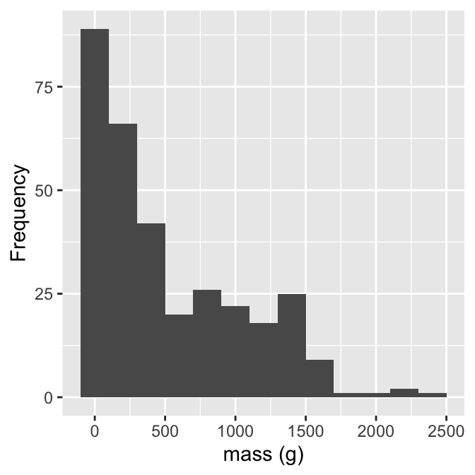
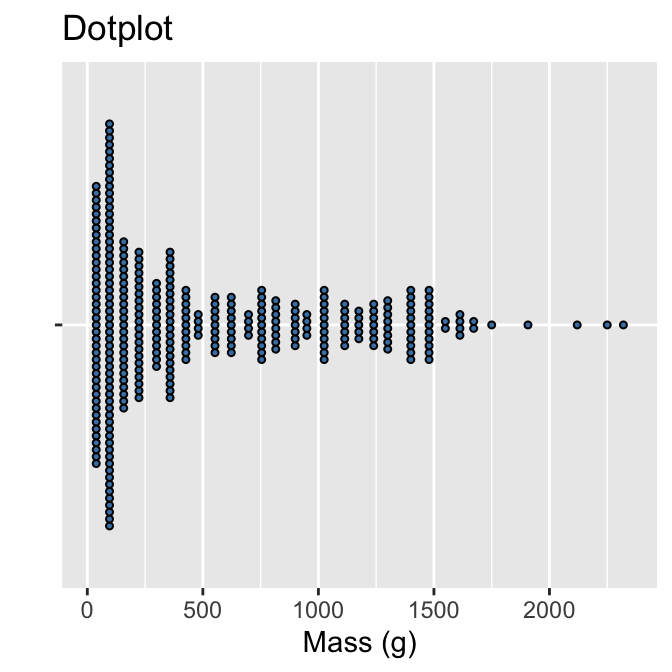
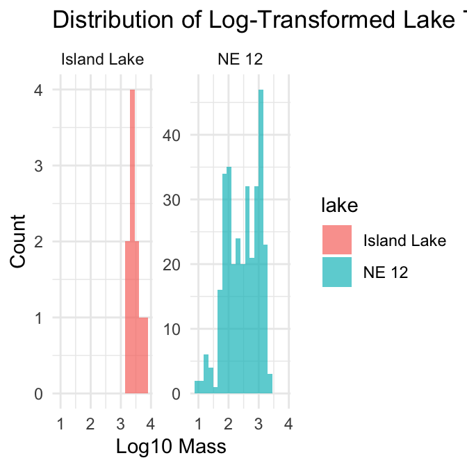

This document demonstrates statistical analysis of lake trout mass data from Island Lake and NE 12, focusing on:
Testing assumptions for parametric tests
Transforming data when assumptions aren’t met
Running different types of tests:
Standard t-test
Log-transformed t-test
Welch’s t-test
Mann-Whitney Wilcoxon test
Permutation test
Interpreting and reporting results properly
What did we do last time in activity 6?
Assumptions of parametric tests
alpha and beta errors
power
making plots of mean and standard error
Lets start by exploring only lake NE 12 as if you were doing a single sample T test.
We will test the assumptions and then do the a T Test on NE 12 compared to Island Lake.
Part 1: Single Sample T-Test
We want to test if the mass of lake trout differ in NE 12 from a mean of 500g.
Activity: Define hypotheses and identify assumptions
H₀: μ = 500 (The mean mass of lake trout in NE12 is 500 g)
H₁: μ ≠ 500 (The mean mass of lake trout in NE12 is not 500 g)
Assumptions for t-test:
Data is normally distributed
Observations are independent
No significant outliers
Part 1: Load Data and Test Assumptions
First we need to load the data for all the lakes and we can look at what we have…
How may lakes are there?
# Install packages if needed (uncomment if necessary)# install.packages("readr")# install.packages("tidyverse")# install.packages("car")# install.packages("here")# Load required packageslibrary(tidyverse) # For data manipulation and visualization
── Attaching core tidyverse packages ──────────────────────── tidyverse 2.0.0 ──
✔ dplyr 1.2.1 ✔ readr 2.2.0
✔ forcats 1.0.1 ✔ stringr 1.6.0
✔ ggplot2 4.0.3 ✔ tibble 3.3.1
✔ lubridate 1.9.5 ✔ tidyr 1.3.2
✔ purrr 1.2.2
── Conflicts ────────────────────────────────────────── tidyverse_conflicts() ──
✖ dplyr::filter() masks stats::filter()
✖ dplyr::lag() masks stats::lag()
ℹ Use the conflicted package (<http://conflicted.r-lib.org/>) to force all conflicts to become errors
library(car) # For statistical tests
Loading required package: carData
Attaching package: 'car'
The following object is masked from 'package:dplyr':
recode
The following object is masked from 'package:purrr':
some
library(patchwork) # For combining plotslibrary(perm) # For permutation tests
# Load the pine needle data# Use here() function to specify the path# Read in the lake trout datalt_df <-read_csv("data/lake_trout.csv")
Rows: 1502 Columns: 5
── Column specification ────────────────────────────────────────────────────────
Delimiter: ","
chr (3): sampling_site, species, lake
dbl (2): length_mm, mass_g
ℹ Use `spec()` to retrieve the full column specification for this data.
ℹ Specify the column types or set `show_col_types = FALSE` to quiet this message.
# Examine the first few rowshead(lt_df)
# A tibble: 6 × 5
sampling_site species length_mm mass_g lake
<chr> <chr> <dbl> <dbl> <chr>
1 I8 lake trout 515 1400 I8
2 I8 lake trout 468 1100 I8
3 I8 lake trout 527 1550 I8
4 I8 lake trout 525 1350 I8
5 I8 lake trout 517 1300 I8
6 I8 lake trout 607 2100 I8
Part 1: Exploratory Data Analysis
Before conducting hypothesis tests, we should always explore our data to understand its characteristics.
Let’s calculate summary statistics and create visualizations.
Activity: Calculate basic summary statistics for lake trout mass
# YOUR TASK: Calculate summary statistics for lake trout mass# Hint: Use summarize() function to calculate mean, sd, n, etc.# Create a summary table for all lake troutdf_summary <- lt_df %>%# group_by(lake) %>% summarize(mean_length =mean(length_mm, na.rm=TRUE),sd_length =sd(length_mm, na.rm=TRUE),n =sum(!is.na(length_mm)),se_length = sd_length /sqrt(n) )print(df_summary)
# A tibble: 1 × 4
mean_length sd_length n se_length
<dbl> <dbl> <int> <dbl>
1 393. 108. 1454 2.83
# Now calculate summary statistics by lake# YOUR CODE HERE
Calculating Mode if you wanted to
# I had accdentally asked you to do mode in HW2 - wiht out telling you how... # here is one approachlt_df %>%filter(!is.na(mass_g)) %>%group_by(lake, mass_g) %>%summarise(count =n(), .groups ="drop_last") %>%arrange(desc(count)) %>%slice(1) %>%select(-count) %>%rename(mode_mass = mass_g)
# A tibble: 6 × 2
# Groups: lake [6]
lake mode_mass
<chr> <dbl>
1 I8 1000
2 Island Lake 2200
3 N 01 1000
4 NE 12 90
5 NE 14 1150
6 Toolik 340
Create a New dataframe of lake NE12 only
# add your code herene12_df <- lt_df %>%filter(lake =="NE 12") %>%filter(!is.na(mass_g)) # Remove any NA values
Part 1: Testing Assumptions
Before conducting our t-test, we need to verify that our data meets the necessary assumptions.
Activity: Test the normality assumption
Methods to test normality:
Visual methods:
QQ plots or histograms
Statistical tests: Shapiro
Wilk test
Part 1: Visualizing the assumptions and data
Activity: Create visualizations of lake trout mass
Create a histogram and a boxplot to visualize the distribution of lake trout massvalues.
Effective data visualization helps us understand:
The central tendency
The spread of the data
Potential outliers
Shape of distribution
Your Task
Histogram for NE 12
# YOUR TASK: Create a histogram of lake trout mass# Hint: Use ggplot() and geom_histogram()# Histogram of all lake trout weightsne12_histo_plot <-ggplot(ne12_df, aes(x = mass_g)) +geom_histogram(binwidth =200) +labs(x ="mass (g)",y ="Frequency") ne12_histo_plot

# how can you make a dataframe only for lake NE 12 # and# make a histogram for lake NE 12 # Note we need the dataframe to make life a bit easier
Dot Plot for NE 12
# 2. Dotplotne12_dot_plot <-ggplot(ne12_df, aes(x = mass_g, y ="")) +geom_dotplot(binwidth =60, stackdir ="center", fill ="steelblue", dotsize =0.5) +labs(title ="Dotplot", x ="Mass (g)", y ="") ne12_dot_plot

Box Plot for NE 12
# 3. Boxplotne12_box_plot <-ggplot(ne12_df, aes(y = mass_g)) +geom_boxplot(fill ="steelblue") +labs( y ="Mass (g)", x ="") +coord_flip()ne12_box_plot
Shapiro-Wilk normality test
data: ne12_df$mass_g
W = 0.85148, p-value < 2.2e-16
Now that we have shown how mass of lake NE 12 fails what do we do next?
Lets explore a comparison of NE 12 and Island Lake mass_g
Exercise: Create a dataframe from Island Lake and NE 12
# Create a dataframe with just Island Lake and NE 12 lakes# Filter out any NA values for massin_df <- lt_df %>%filter(lake %in%c("NE 12", "Island Lake")) %>%filter(!is.na(mass_g)) # Look at the first few rowshead(in_df)
# A tibble: 6 × 5
sampling_site species length_mm mass_g lake
<chr> <chr> <dbl> <dbl> <chr>
1 Island Lake lake trout 640 2600 Island Lake
2 Island Lake lake trout 650 2350 Island Lake
3 Island Lake lake trout 585 2200 Island Lake
4 Island Lake lake trout 720 3950 Island Lake
5 Island Lake lake trout 880 6800 Island Lake
6 Island Lake lake trout 830 3200 Island Lake
Get summary stats for lake trout mass in NE12 and Island lakes
Get a summary of the data by lake
# Get a summary of the data by lakesummary_by_lake <- in_df %>%group_by(lake) %>%summarise(n =n(), # Count of observationsmean_mass =mean(mass_g), # Mean masssd_mass =sd(mass_g), # Standard deviationse_mass = sd_mass /sqrt(n), # Standard errormin_mass =min(mass_g), # Minimum massmax_mass =max(mass_g) # Maximum mass )# View the summarysummary_by_lake
# A tibble: 2 × 7
lake n mean_mass sd_mass se_mass min_mass max_mass
<chr> <int> <dbl> <dbl> <dbl> <dbl> <dbl>
1 Island Lake 10 3165 1617. 511. 1650 6800
2 NE 12 322 534. 520. 29.0 9 2320
Visualize data by lake
Make a histogram of both Island and NE 12 lakes
# Create histograms to visualize the distributionhist_plot <- in_df %>%ggplot(aes(x = mass_g, fill = lake)) +geom_histogram(bins =20, alpha =0.7) +labs(x ="Mass (g)", y ="Count") +theme_minimal() +facet_wrap(~lake, scales ="free_y") # Separate plots with different y-scales# Show the histogramhist_plot
Practice for later if you choose
Informal Normality test - often better
QQ PLOT FOR BOTH LAKES
Exercise: check normality
Always do a qq plot
In a QQ plot, points that follow the line indicate data that follows a normal distribution. Deviations from the line suggest non-normality.
# Create QQ plots for each lake to check normalityqq_plot <- in_df %>%ggplot(aes(sample = mass_g, color = lake)) +stat_qq() +stat_qq_line() +labs(title ="QQ Plot for Normality Check", x ="Theoretical Quantiles", y ="Sample Quantiles") +theme_minimal() +facet_wrap(~lake) # Create separate plots for each lake# Show the QQ plotqq_plot
Formal normality test
Exercise: do a Shapiro-Wilk Test
We can do a formal test for a p value
Note island looks non normal in the qqplot but its really close with the Shapiro-Wilk test…
# Formal test for normality: Shapiro-Wilk test# We'll do this for each lake separatelynormality_results <- in_df %>%group_by(lake) %>%summarize(shapiro_stat =shapiro.test(mass_g)$statistic,shapiro_p_value =shapiro.test(mass_g)$p.value,normal_distribution =if_else(shapiro_p_value >0.05, "Normal", "Non-normal")# above wwe are using an ifelse test which is a great oneliner )# Print the resultsprint(normality_results)
# A tibble: 2 × 4
lake shapiro_stat shapiro_p_value normal_distribution
<chr> <dbl> <dbl> <chr>
1 Island Lake 0.841 4.54e- 2 Non-normal
2 NE 12 0.851 5.94e-17 Non-normal
Equality of variance test - Levene’s Test
Exercise: test for equal variances
Again we want the P value not significant
The Levene’s test has the following null hypothesis: - H₀: The variances are equal across groups - H₁: The variances are not equal across groups
If the p-value is less than 0.05, we reject the null hypothesis and conclude the variances are not equal.
# Formal test for equal variances: Levene's testlevene_result <-leveneTest(mass_g ~ lake, data = in_df)
Warning in leveneTest.default(y = y, group = group, ...): group coerced to
factor.
print(levene_result)
Levene's Test for Homogeneity of Variance (center = median)
Df F value Pr(>F)
group 1 25.997 5.775e-07 ***
330
---
Signif. codes: 0 '***' 0.001 '**' 0.01 '*' 0.05 '.' 0.1 ' ' 1
Transformations
Commonly a log10 transformation works well.
Exercise: do a log transformation of Log 10
We could also look at the difference in means… some cool code here
# Add log-transformed mass variable to our datasetin_df <- in_df %>%mutate(log_mass =log10(mass_g)) # Create log10 transformed masshead(in_df)
# A tibble: 6 × 6
sampling_site species length_mm mass_g lake log_mass
<chr> <chr> <dbl> <dbl> <chr> <dbl>
1 Island Lake lake trout 640 2600 Island Lake 3.41
2 Island Lake lake trout 650 2350 Island Lake 3.37
3 Island Lake lake trout 585 2200 Island Lake 3.34
4 Island Lake lake trout 720 3950 Island Lake 3.60
5 Island Lake lake trout 880 6800 Island Lake 3.83
6 Island Lake lake trout 830 3200 Island Lake 3.51
Now look at histograms of logged data
Exercise: histogram of transformed data
We need to see if it worked
# Create histograms of log-transformed datalog_hist_plot <- in_df %>%ggplot(aes(x = log_mass, fill = lake)) +geom_histogram(bins =20, alpha =0.7) +labs(title ="Distribution of Log-Transformed Lake Trout Mass", x ="Log10 Mass", y ="Count") +theme_minimal() +facet_wrap(~lake, scales ="free_y")# Show the log-transformed histogramlog_hist_plot

Now a qqplot - we will skip Shapiro-Wilk this time ; )
Exercise: do a qqplot of transformed data
We could also look at the difference in means… some cool code here
# QQ plot for log-transformed datalog_qq_plot <- in_df %>%ggplot(aes(sample = log_mass, color = lake)) +stat_qq() +stat_qq_line() +labs(title ="QQ Plot for Log-Transformed Data", x ="Theoretical Quantiles", y ="Sample Quantiles") +theme_minimal() +facet_wrap(~lake)# Show the log QQ plotlog_qq_plot
Exercise: Shapiro-Wilk test
log_normality_results <- in_df %>%group_by(lake) %>%summarize(shapiro_stat =shapiro.test(log10(mass_g))$statistic,shapiro_p_value =shapiro.test(log10(mass_g))$p.value,normal_distribution =if_else(shapiro_p_value >0.05, "Normal", "Non-normal")# above wwe are using an ifelse test which is a great oneliner )# Print the resultsprint(log_normality_results)
# A tibble: 2 × 4
lake shapiro_stat shapiro_p_value normal_distribution
<chr> <dbl> <dbl> <chr>
1 Island Lake 0.934 0.488 Normal
2 NE 12 0.954 0.0000000158 Non-normal
Exercise: Levene’s test
# Check for equal variances in log-transformed datalevene_log_result <-leveneTest(log_mass ~ lake, data = in_df)
Warning in leveneTest.default(y = y, group = group, ...): group coerced to
factor.
print(levene_log_result)
Levene's Test for Homogeneity of Variance (center = median)
Df F value Pr(>F)
group 1 11.77 0.0006784 ***
330
---
Signif. codes: 0 '***' 0.001 '**' 0.01 '*' 0.05 '.' 0.1 ' ' 1
Transformation fails! What next
For grins lets do the Two Sample T Test anyway
Exercise: Two sample T Test on regular data
Try a t test
# Run a standard two-sample t-testt_test_result <-t.test( mass_g ~ lake, data = in_df,var.equal =TRUE, # Assumes equal variancesalternative ="two.sided")# Show the resultsprint(t_test_result)
Two Sample t-test
data: mass_g by lake
t = 14.181, df = 330, p-value < 2.2e-16
alternative hypothesis: true difference in means between group Island Lake and group NE 12 is not equal to 0
95 percent confidence interval:
2266.304 2996.360
sample estimates:
mean in group Island Lake mean in group NE 12
3165.0000 533.6677
Exercise: Two sample T Test on transformed data
Try a t test
# Run a t-test on log-transformed datalog_t_test_result <-t.test( log_mass ~ lake, data = in_df,var.equal =TRUE, # Assumes equal variancesalternative ="two.sided")# Show the resultsprint(log_t_test_result)
Two Sample t-test
data: log_mass by lake
t = 5.8192, df = 330, p-value = 1.4e-08
alternative hypothesis: true difference in means between group Island Lake and group NE 12 is not equal to 0
95 percent confidence interval:
0.6614902 1.3371216
sample estimates:
mean in group Island Lake mean in group NE 12
3.457554 2.458248
Exercise: Looking at results of log10 data
When analyzing log-transformed data:
The mean of log-transformed data, when back-transformed, gives the geometric mean (not the arithmetic mean)
The back-transformed confidence intervals represent the confidence interval for the geometric mean and have to be calculated carefully
Report results like: “The geometric mean mass of lake trout in NE 12 was X g (95% CI: Y-Z)”
Note you can’t take the 10^SE to get the standard errors but rather you need to get the mean - se and the mean + se and then back transform…
# Calculate back-transformed means and confidence intervals# This converts log values back to original scaleback_transformed <- in_df %>%group_by(lake) %>%summarise(n =n(),mean_log =mean(log_mass),sd_log =sd(log_mass),se_log = sd_log /sqrt(n),# Back-transform meangeometric_mean =10^mean_log,# Back transform SElower_se =10^(mean_log -se_log),upper_se =10^(mean_log + se_log),arithmetic_mean =mean(mass_g) )# Show back-transformed resultsback_transformed %>%select(lake, mean_log, geometric_mean, arithmetic_mean)
# A tibble: 2 × 4
lake mean_log geometric_mean arithmetic_mean
<chr> <dbl> <dbl> <dbl>
1 Island Lake 3.46 2868. 3165
2 NE 12 2.46 287. 534.
Now plot the back transformed data
In some cases the error bars are not symmetrical
Exercise:
Try
# Create a plot showing geometric means with SE barsgeo_mean_plot <- back_transformed %>%ggplot(aes(x = lake, y = geometric_mean, fill = lake)) +# Add bars for geometric meansgeom_bar(stat ="identity", width =0.5, alpha =0.7) +# Add error bars for standard errorgeom_errorbar(aes(ymin = lower_se, ymax = upper_se), width =0.2, linewidth =1) +# Add labels and titlelabs(title ="Geometric Mean Lake Trout Mass with Standard Error",subtitle ="Back-transformed from log10 scale",x ="Lake",y ="Geometric Mean Mass (g)") +# Use a clean themetheme_minimal() +# Remove legend (since we already have lake on x-axis)theme(legend.position ="none") # Display the plotgeo_mean_plot
3. Welch’s t-test
# Run Welch's t-test (doesn't assume equal variances)welch_test_result <-t.test( mass_g ~ lake, data = in_df,var.equal =FALSE, # Does NOT assume equal variancesalternative ="two.sided")# Show the resultsprint(welch_test_result)
Welch Two Sample t-test
data: mass_g by lake
t = 5.1368, df = 9.0578, p-value = 0.0006016
alternative hypothesis: true difference in means between group Island Lake and group NE 12 is not equal to 0
95 percent confidence interval:
1473.676 3788.989
sample estimates:
mean in group Island Lake mean in group NE 12
3165.0000 533.6677
When to Use Welch’s t-test
Welch’s t-test is preferred when:
- Group variances are unequal (as indicated by Levene’s test)
- Sample sizes are different between groups
- It’s more robust than the standard t-test in many situations
4. Mann-Whitney Wilcoxon test
# Run Mann-Whitney U test (non-parametric alternative to t-test)wilcox_test_result <-wilcox.test( mass_g ~ lake, data = in_df,alternative ="two.sided")# Show the resultsprint(wilcox_test_result)
Wilcoxon rank sum test with continuity correction
data: mass_g by lake
W = 3205.5, p-value = 9.506e-08
alternative hypothesis: true location shift is not equal to 0
When to Use Mann-Whitney Wilcoxon Test
This non-parametric test is preferred when:
- Data is not normally distributed (even after transformation)
- Comparing medians rather than means
- Data contains outliers that might affect a t-test
- It compares the ranks of the values rather than the actual values
5. Permutation test
# First, let's make sure we have balanced samples# We'll select a random subset from NE 12 to match Island Lake sizeset.seed(123) # For reproducibility# Get the smaller sample sizeisland_size <-sum(in_df$lake =="Island Lake")# Randomly sample from NE 12 to match Island Lake sizene12_sample <- in_df %>%filter(lake =="NE 12") %>%slice_sample(n = island_size)# Combine with Island Lake databalanced_df <-bind_rows( ne12_sample, in_df %>%filter(lake =="Island Lake"))# Extract mass data by lakene12_mass <- balanced_df %>%filter(lake =="NE 12") %>%pull(mass_g)island_mass <- balanced_df %>%filter(lake =="Island Lake") %>%pull(mass_g)# Run permutation testperm_test_result <-permTS(x = ne12_mass,y = island_mass,alternative ="two.sided",method ="exact.mc", # Monte Carlo method for large samplescontrol =permControl(nmc =10000) # Number of Monte Carlo replications)# Show the resultsprint(perm_test_result)
Exact Permutation Test Estimated by Monte Carlo
data: ne12_mass and GROUP 2
p-value = 2e-04
alternative hypothesis: true mean ne12_mass - mean GROUP 2 is not equal to 0
sample estimates:
mean ne12_mass - mean GROUP 2
-2519.9
p-value estimated from 10000 Monte Carlo replications
99 percent confidence interval on p-value:
0.000000000 0.001059383
When to Use Permutation Tests
Permutation tests are useful when:
- Sample sizes are small
- Data doesn’t meet the assumptions for parametric tests
- You want a robust test that makes minimal assumptions about the data
- They can test any statistic, not just means
Now lets compare all of the results
Let’s compare the results from all tests:
# Create a summary table of test statistics and p-valuestest_results <-data.frame(Test =c("Standard t-test", "Log-transformed t-test", "Welch's t-test", "Mann-Whitney Wilcoxon test"),Statistic =c(paste("t =", round(t_test_result$statistic, 2)),paste("t =", round(log_t_test_result$statistic, 2)),paste("t =", round(welch_test_result$statistic, 2)),paste("W =", wilcox_test_result$statistic)),p_value =c(t_test_result$p.value, log_t_test_result$p.value, welch_test_result$p.value, wilcox_test_result$p.value),Significant =c(t_test_result$p.value <0.05, log_t_test_result$p.value <0.05, welch_test_result$p.value <0.05, wilcox_test_result$p.value <0.05))# Display the resultstest_results
Test Statistic p_value Significant
1 Standard t-test t = 14.18 5.667524e-36 TRUE
2 Log-transformed t-test t = 5.82 1.399864e-08 TRUE
3 Welch's t-test t = 5.14 6.016186e-04 TRUE
4 Mann-Whitney Wilcoxon test W = 3205.5 9.506478e-08 TRUE
Visualizing Results
# Create a combined visualizationcombined_plot <- in_df %>%ggplot(aes(x = lake, y = mass_g, fill = lake)) +geom_boxplot(alpha =0.7, outlier.shape =NA) +# Hide outliers as we'll plot pointsgeom_jitter(width =0.2, alpha =0.5, size =2) +# Add individual pointslabs(x ="Lake",y ="Mass (g)") +theme_minimal() +theme(legend.position ="none") # Remove redundant legend# Show the plotcombined_plot
When reporting results from statistical tests, include:
For Standard t-test:
Lake trout from NE 12 had significantly different mass (M = [mean], SD = [SD]) compared to Island Lake (M = [mean], SD = [SD]), t([df]) = [t-value], p = [p-value].
For Log-transformed t-test:
After log transformation to meet normality assumptions, lake trout from NE 12 had significantly different mass (geometric mean = [value], 95% CI [lower-upper]) compared to Island Lake (geometric mean = [value], 95% CI [lower-upper]), t([df]) = [t-value], p = [p-value].
For Welch’s t-test:
Assuming unequal variances, lake trout from NE 12 had significantly different mass (M = [mean], SD = [SD]) compared to Island Lake (M = [mean], SD = [SD]), Welch's t([df]) = [t-value], p = [p-value].
For Mann-Whitney Wilcoxon test:
Lake trout mass differed significantly between NE 12 (Mdn = [median]) and Island Lake (Mdn = [median]), W = [W-value], p = [p-value].
For Permutation test:
Permutation testing (10,000 iterations) revealed significant differences in lake trout mass between NE 12 and Island Lake, p = [p-value].
Conclusion
This analysis demonstrates several approaches to comparing mass between lake trout populations. The choice of statistical test depends on whether your data meets the assumptions of parametric tests. When assumptions are violated:
Try transforming the data (e.g., log transformation)
Use Welch’s t-test if variances are unequal
Use non-parametric tests (Mann-Whitney or permutation tests) if data remains non-normal
All methods have their strengths and limitations, and the consistency of results across methods can strengthen your conclusions.
When to Use Each Test
Standard t-test: When data is normally distributed with equal variances
Log-transformed t-test: When raw data is skewed but log-transformation achieves normality
Welch’s t-test: When variances are unequal
Mann-Whitney Wilcoxon test: When data is not normal and cannot be transformed to normality
Permutation test: When sample sizes are small or assumptions cannot be met